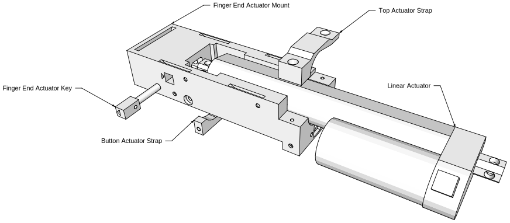
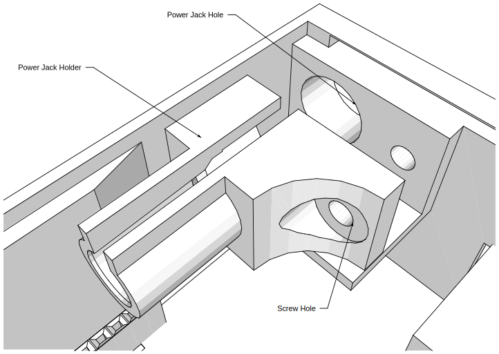

NARFSTR¶
Design¶
Structure¶
The robot has four adjustable legs, which support a linear actuator, the electronics, and the fingerprint assembly. The following image labels all the main parts:

Fingerprint Assembly¶
The fingerprint consists of a fingerprint, held by two supports. A roller rolls over the fingerprint, pressing it against the scanner. The following image shows how it works:
The linear actuator pulls the roller towards the button. As the roller moves, it compresses the fingerprint against the scanner, causing the scanner the capture a rolled print. Once the moving assembly (consisting of the roller and its support structure) hits the button, the linear actuator stops, and then reverses.
Electronics Box¶
The electronics box contains openings for all the connections and buttons on the robot. The following picture shows all the main features:

There are also four more openings on the back. These are to allow the linear actuator and the button in the fingerprint assembly to connect to the electronics in the box. The following image shows these connections:
Construction¶
Parts¶
3D Printed Parts¶
Almost all of the parts for the robot are 3D printed. The STL files for the parts are located in Final STL Files/NARFSTR. All of the 3D printed parts were printed in PLA except for the fingerprints. (For more information abou the fingerprints, see Fingerprints.) The PLA parts were printed with a layer height of 0.2 mm using MakerBot’s “Standard” profile. We used a MakerBot Replicator 2 and a 5th Generation Replicator. The following table lists each part’s name and quantity.
| Part Name | Quantity |
|---|---|
| Actuator Mount - Finger End | 1 |
| Actuator Mount - Motor End | 1 |
| Actuator Pin - Finger End | 1 |
| Actuator Pin - Motor End | 1 |
| Actuator Strap | 1 |
| Bolt Head | 4 |
| Button Pusher | 1 |
| Button Strap | 1 |
| Electronics Box | 1 |
| Electronics Box Front Tab | 1 |
| Electronics Box Side Lid | 1 |
| Electronics Box Top Lid | 1 |
| Fingerprint | 1 |
| Fingerprint Base | 1 |
| Fingerprint Bracing | 2 |
| Fingerprint Clip | 2 |
| Fingerprint Mount - Finger End | 1 |
| Fingerprint Mount - Motor End | 1 |
| Fingerprint Roller A | 1 |
| Fingerprint Roller B | 1 |
| Leg Connector - Finger End | 1 |
| Leg Connector - Motor End | 1 |
| Leg Lower | 4 |
| Leg Upper | 4 |
| Lock Nut | 4 |
| Power Jack Holder | 1 |
Electronic Parts¶
The following table lists all the electronic parts. Parts that are marked with * are close to the parts I used, but may not be exact. This is because the parts I used came from kits or other sources, and I was unable to determine their exact information. For the male and female banana plugs, 3 different colors are recommended: 1 red, 1 black, 2 blue.
| Part Name | Manufacturer | Number | Quantity |
|---|---|---|---|
| 10 kΩ resistor | 3 | ||
| 12 mm push button* | Sparkfun | COM-09190 | 2 |
| 12V 5A switching power supply | Adafruit | 352 | 1 |
| 20 gauge stranded wire | 1 | ||
| 470Ω resistor | 3 | ||
| 5 cm x 7 cm double sided perfboard | Amico | s14011600am1317 | 1 |
| Arduino Ethernet shield | Arduino | A000056 | 1 |
| Arduino Uno R3 | Arduino | A000066 | 1 |
| Common cathode RGB LED* | Sparkfun | COM-00105 | 1 |
| Female tab connector | TE Connectivity / AMP | 3-350820-2 | 3 |
| LED Cap* | Keystone | 8665 | 1 |
| Linear actuator - 5” Stroke | Firgelli Automations | FA-TR-35-12-5” | 1 |
| Male tab connector | TE Connectivity / AMP | 3-520107-2 | 3 |
| Power pigtail female | Monoprice | 6881 | 1 |
| Solderless banana plug female | Johnson | 108-0910-001 | 4 |
| Solderless banana plug male | Johnson | 108-0310-001 | 4 |
| Solid core mounting wire kit | Velleman Components | K/MOWM | 1 |
| SPST 9 amp on off illuminated green | Jameco Valuepro | R13-66B-G-02 | 1 |
| Switch push button SPST off momentary (on) red amp LED illuminated | Jameco Valuepro | R13-508AL-05-BRR-L3 | 1 |
| UBEC DC/DC step-down (buck) converter - 5V @ 3A output | Adafruit | 1385 | 1 |
| VNH5019 motor driver carrier | Pololu | 1415 | 1 |
Screws and Miscellaneous Parts¶
I did not order these parts, and so have limited information about them.
| Part name | Color | Quantity |
|---|---|---|
| 19 mm diameter rubber feet | Black | 8 |
| #4 US wood screw, 15.7 mm | Gold | 17 |
| #4 US wood screw, 8.5 mm | Black | 19 |
| #8 US machine screw, 12 mm | Silver | 4 |
| Epoxy | ||
| Super glue |
Here is a picture of the screws:
From now on, I will refer to the screws by their color.
Legs and Actuator Mount Assembly¶
Legs¶
There are two leg assemblies: one on the side of the actuator with the motor, and one on the other side. Both are assembled the same way, but they use different leg adapters. To assemble a leg assembly, first screw a lock nut onto the threaded bolt in the center of the lower adjustable foot. Repeat for the other leg. Then, put an upper adjustable foot piece on top of each lower adjustable foot piece. Push down until the lock nut clicks, locking the lower part to the upper part. Then, insert a bolt head into the square hole on top of each upper adjustable foot. Screw the square head into the bolt using one of the black screws. Finally, connect each foot assembly to the lower part of a leg adapter. Secure the connection by screwing golden screws into the holes on the upper adjustable foot. Repeat this process with the other leg adapter to make the other leg assembly.

Actuator Mounts¶
There are two actuator mounts: one for the side of the actuator with the motor, and one for the other side.
Motor End Actuator Mount¶
Slide the actuator into the mount. Insert the motor end actuator key into the hole in the actuator mount. Make sure the arrows point towards each other. Secure the key with a golden screw.
Finger End Actuator Mount¶
Slide the actuator into the mount. Insert the finger end actuator key into the hole in the actuator mount. Make sure the arrows point towards each other. Attach the top actuator strap to the actuator using two golden screws.
Insert the bottom actuator strap as shown in the diagram below. Secure it with two black screws. Finally, screw a golden screw into the hole labeled “Screw Hole for Actuator Key” on the diagram below. This secures the key.
Put a 12 mm push button into the button hole on the actuator mount. Secure the button using the button strap and two black screws.
Insert the finger end fingerprint mount and the motor end fingerprint mount into the bottom of the actuator mount. Secure each one with two black screws. Then, insert a fingerprint clip into each of the fingerprint mounts.
Connecting the Legs and Actuator Mounts¶
Insert the leg assemblies into the bottom of the actuator assembly. Secure each leg assembly with two golden screws.

Rubber Feet¶
Insert two rubber feet into the bottom of each foot.
Fingerprint Assembly¶
Glue fingerprint roller A into fingerprint roller B using super glue. Let dry. Connect fingerprint roller to moving base with the exterior finger supports. Secure each support with two black screws. Insert the button pusher into the moving base.

Attach the fingerprint assembly to the actuator by first aligning the four holes on the moving base with the holes on the actuator, ensuring that the button pusher faces the button. Then, screw a silver screw into each of the four holes on the moving base.
Electronics Box Assembly¶
Note: assemble the electronics before assembling the box.
Slide Arduino Uno (with Arduino Ethernet Shield) into the box. Screw female banana plugs into holes of electronics housing. If using colors, put a red jack and a black jack into the top row, and put two blue jacks in the bottom row. Then, super glue the LED cap into the LED hole.
Super glue the front tab onto the bottom of the electronics box.
Assemble the top lid by inserting the power switch and the trigger switch into their holes. The power switch is the green rocker switch, and the trigger switch is the red push button. Using epoxy, glue a 12 mm button into the DHCP reset button hole. The square base of the button should be glued onto the plastic square on the bottom of the top lid.
Assemble the power jack by inserting a female power pigtail into the power jack holder. This may require some force. Screw power jack holder into electronics box using a black screw.
Put all other electronics into the box in the empty area behind the Arduino and put LED into LED cap. Ensure that everything is properly connected. Then, put top on box and secure with two black screws. Put back side on box and secure with one black screw. Finally, connect all cables.
Electronics¶
Design¶
The robot is controlled by an Arduino Uno microcontroller. On top of the Arduino, there is an Arduino Ethernet Shield, which, through its single Ethernet port, allows the robot to connect to a network. The following components are connected to the Arduino through the header pins on the shield:
- RGB LED: serves as an indicator light.
- Trigger switch: a red pushbutton, causes the robot to move its finger back and forth when pressed.
- Limit switch: a 12 mm push button which detects when the fingerprint has finished rolling.
- DHCP reset button: a 12 mm push button, causes the robot to request a DHCP lease.
- Pololu VNH5019 motor driver chip: used to drive the linear actuator.
The robot has a single 2.1 mm DC barrel jack for power and requires 12 V DC at around 3A (estimated; based on peak motor current draw). The 12 V lines are attached directly to the motor control board, and the Arduino is powered by the output of a 5V Universal Battery Elimination Circuit (UBEC). The UBEC can produces a regulated 5 V output at a current of up to 3A. This works far better than the Arduino’s built-in regulator, which, though it can handle 12 volts, gets very hot when doing so and has trouble providing the necessary current for both the Arduino and the Ethernet Shield. The robot also has a power switch, which is connected to the 12 V input line.
Here is a schematic:
There is no Ethernet Shield in the schematic, but it would be placed on top of the Arduino.
Assembly¶
First, put the Arduino Ethernet Shield onto the Arduino. Then, on the 5 cm x 7 cm perfboard, assemble the circuit using the schematic above. For the motor and limit switch, which are mounted outside of the box, connect their leads to the female banana plugs, which will go into holes on the side of the electronics box. On the ends of the leads for the motor and button (which will be outside the box), attach the male banana plugs. Use the two blue plugs for the button’s leads, the red one for the motor’s red wire, and the black one for the motor’s black wire. For the LED and other buttons, make sure they are connected with long wires so they can reach from the circuit board to their designated location in the box. Also, do not directly connect any components that will be mounted in the box directly to the circuit board. You will not be able to put the components into their holes. Instead, use the tab connectors to attach the component to the rest of the circuit. Finally, on all the 12 V lines (which, because they are connected to the motor, would have high currents), use the 20 gauge wire.
Fingerprints¶
The fingerprints used on the robot are 3D printed. The first step in making a fingerprint is to generate a PNG image of the fingerprint. To do this, I used SFinGe (Synthetic Fingerprint Generator) from the Biometric System Laboratory at the University of Bologna . With the program, I configured various parameters of the fingerprint, and once the ridges were generated, clicked the “View original” button after every step to remove all the distortion and scratches. Once the fingerprint was generated, I saved it to a bmp file and then converted it to a png.
To turn the PNG into a 3D-printable file, I wrote an OpenSCAD script, located at Fingerprints/NARFSTRRolledFingerprints/roll.scad. This script can take any black and white PNG image and produce a STL file that, when 3D printed, will fit perfectly into the robot. To use the script, configure the variables at the top of the file:
imageResolution = 19.7; //dots per mm
imageX = 416; //px
imageY = 560; //px
file = "FGen1.png";
fingerprintX = 30; //mm
fingerprintY = 30; //mm
fingerprintScale = 1.4;
Once these variables are configured, hit “Preview” in OpenSCAD to make sure everything looks good, and then hit “Render”. This may take about an hour. Once the rendering is complete, export the file as an STL.
This script will generate a very complex 3D file which contains the fingerprint, mounted on a spongy area, which is mounted on tabs that connect to the robot. Here is a cross-sectional view of the finished product:
The two tabs at either end allow the fingerprint to be secured to the robot. The fingerprint is on top of the raised area in the middle. The holes in the raised area allow the fingerprint to compress, which results in a better scan. Here is a close up view of the holes:
To 3D print the STL file, use MakerBot Flexible Filament. Be sure to set the printing profile to the custom profile located at Fingerprints/ NARFSTR Rolled Fingerprints/fingerprintprofile.txt. The custom profile, which is based off of the MakerBot flexible filament profile, uses 1 shell and an extruder temperature of 140 °C.